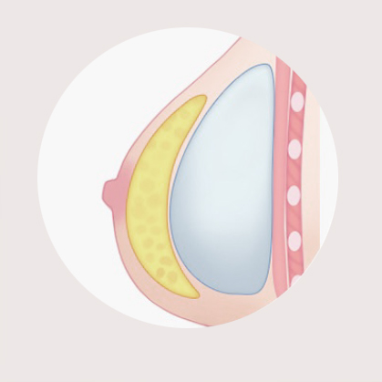

가 슴 성 형

EDOM breast
촉감, 모양, 크기
모두를 만족시키다
부작용 걱정 없는
최적의 보형물로
성형전문의 책임 시술
이담에서는 가슴성형의 촉감 / 볼륨감 / 움직임 / 안전성을
고려하여 개개인에 맞는 아름답고 이상적인 가슴라인을
선사합니다. 최신 보형물은 일반 보형물보다 사용하기 까다롭고,
올바른 수술 기술을 습득하기에 오랜 시간이 걸립니다.
때문에 우수한 기술과 검증된 실력을 지닌 전문의 보유 병원만이
만족도 높은 수술결과를 나타낼 수 있습니다.

EDOM Solution 가슴성형 체크 포인트
-
1
리얼한 촉감으로 진짜 내 가슴보다 부드러운 촉감
-
2
물방울 모양의 자연스러운 볼륨감
-
3
어떤 자세에서도 자연스러운 가슴 모양
-
4
국제적으로 정전성이 입증된 FDA, CE, ISO 브랜드의
보형물 사용
EDOM Solution 가슴보형물
-
스무스 타입
표면이 부드럽고 매끈한 타입으로
수술 후 촉감이 좋으며
체형에 따라 움직임이 자유롭습니다.
실제 가슴과 유사하게 출렁이는
움직임을 보입니다. -
텍스처 타입
표면이 거친타입으로 수술 후
고정이 잘되어 구형구축이 적고
마사지가 필요없습니다.
스무스 타입에 비해 부드러움이
조금 떨어집니다. -
라운드
일반적인 형태의 보형물로 가장 많이
쓰이는 형태입니다.
풍만한 볼륨은 물론 서있을 때와
누웠을때 모두 자연스러운 모양
연출이 가능합니다.-
1
윗 가슴이 다소 빈약한 경우
-
2
가슴 높이가 적당한 경우
-
3
흉곽의 크기가 적당한 경우
-
4
가슴이 쳐져 있지 않은 경우
-
1
-
물방울
가슴의 해부학적 구조와 비슷해서
피부가 얇은 여성의 경우도
주름이 덜 만져지고 가슴의 윗부분이
볼록해지는 윗불록 현상이 적습니다.-
1
가슴이 밑밑한 경우
-
2
가슴이 위치가 높은 경우
-
3
흉곽 크기가 좁은 경우
-
4
가슴이 쳐져 있을 경우
-
1
EDOM Solution 절개 부위에 따른 수술 방법
-
겨드랑이 주름 절개
겨드랑이의 주름진 부위를 절개하는 방법으로 겨드랑이를 자세히 보지 않는 이상 흉터가 작고 눈에 잘 띄지 않아 흉터에 민감한 환자에게 만족도가 높은 절개 방법입니다.
-
1
가슴 부위에 흉터가 남지 않습니다.
-
2
유선 손상이 없어 기능 및 감각을 유지시켜줍니다.
-
3
수술 시간이 짧으며 수술 후 회복이 빠릅니다.
-
1
-
유륜 경계부위 절개
유두 주위에 있는 짙은 색상의 유륜 경계 부위를 1.5~2Cm 가량 절개하게 됩니다. 유륜의 색이 짙을 수록 흉터가 잘 보이지 않습니다.
-
1
수술직후 팔의 움직임이 자유롭습니다.
-
2
보형물이 위치할 부위와 가까워 위치를 정확하게 잡을 수 있습니다.
-
1
-
가슴 밑 주름 부위 절개
가슴 밑 주름을 따라 3~4Cm 가량 절개하는 방법으로 집도의가 직접 가슴 밑을 보면서 수술하기 때문에 정확한 박리가 가능하여 좋은 결과를 기대할 수 있습니다.
-
1
유선, 타 조직을 손상시키지 않고 빠르고 안전하게 수술할 수 있습니다.
-
2
가슴 밑선을 따라 반흔이 남습니다.
-
1
EDOM Solution 보형물의 삽입 위치
-

유방조직 아래 삽입
근육 팽창이 생략되기 때문에 다른 수술에 비해
수술이 간편하여 수술 후 통증이 적습니다.
가슴에 지방이 적고 가슴근육이 거의 없거나
발달하지 않은 경우 구형구축이 발생할 수 있습니다. -
가슴근육 아래 삽입
혈관이나 신경의 손상을 피할 수 있고, 보형물이 근육
아래에 있기 때문에 자연스럽고 구형구축의 발생율이 낮습니다.
가슴 조직과 근육을 동시에 팽창되기 때문에
수술 후 통증이 다소 있고 회복기간이 필요합니다. -
듀얼 플레인 삽입
보형물의 위쪽을 가슴 근육아래에 삽입하고 아래쪽을
근막으로 덮어 가장 자연스러운 모습의 가슴을 완성합니다.
수술의 난이도가 다소 높기 때문에 경험과 노하우가 많은
전문의가 집도해야 합니다.
이담외과의 치료는 더 특별합니다

아름다움의 기준을 만드는
성형외과 전문의
좋은 의료의 핵심은 실력입니다. 풍부한 임상경험과 숙련된 노하우를 바탕으로 최적화된 방법으로 기능적인 부분을 넘어 환자 개개인의 고유한 아름다움을 만듭니다. 만족도 높은 수술 결과를 위해 수술 전 충분한 상담과 소통을 진행하며 미묘한 차이 하나까지 철저히 고려하여 타고난 듯 자연스럽게 안전한 치료를 추구합니다.

미용성형을 넘어
재건성형 분야까지
당뇨발(당뇨병성 족부궤양), 피부 및 연부조직의 양성종양, 안와골절 및 코뼈골절과 같은 안면외상, 예기치 못한 수부손상, 응급수술 등과 같이 미용성형을 넘어 재건성형 분야 까지 이담은 가능합니다. 최적의 치료결과를 위해 혈관외과, 정형외과, 성형외과, 내과 등 각 분야 전문의로 구성된 의료진의 협진으로 진료합니다.